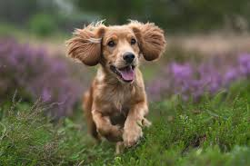

Raça: Cocker

É um tipo de cachorro mais sensível e tranquilo, bem estilo de cachorro de apartamento
É um cachorro que late bastante também quando ocorre algo de novo que ele não está acostumado
Essa raça foi a mesma raça usada em A dama e o vagabundo, ele exige bastante tempo e atenção, por conta de suas atividades fisícas.
Voltar